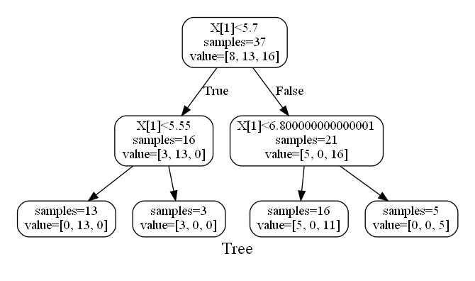

Classification
Models
The data passed must be in the form of (number of data, features).
HorseML.Classification.Logistic — TypeLogistic(; alpha = 0.01, ni = 1000)Logistic Regression classifier.
This struct learns classifiers using multi class softmax. Parameter α indicates the learning rate, and ni indicates the number of learnings.
Example
julia> model = Logistic(alpha = 0.1)
Logistic(0.1, 1000, Matrix{Float64}(undef, 0, 0))
julia> fit!(model, x, ct)
3×3 Matrix{Float64}:
1.80736 1.64037 -0.447735
-1.27053 1.70026 2.57027
4.84966 -0.473835 -1.37582
julia> println(predict(model, x))
[1, 1, 1, 1, 1, 1, 1, 1, 1, 1, 1, 1, 1, 3, 3, 3, 3, 3, 3, 3, 3, 3, 3, 3, 3, 3, 3, 3, 3, 3, 3, 3, 3, 3, 3, 3, 3]HorseML.Classification.SVC — TypeSVC(; alpha=0.01, ni=1000)Support Vector Machine Classifier.
This struct learns classifiers using One-Vs-Rest. One-Vs-Rest generates two-class classifiers divided into one class and the other classes using Logistic Regression, adopting the most likely one among all classifiers.
Parameter α indicates the learning rate, and ni indicates the number of learnings.
Example
julia> model = SVC()
SVC(0.01, 1000, Logistic[])
julia> fit!(model, ct)
3-element Vector{Logistic}:
Logistic(0.01, 1000, [0.8116709490679518 1.188329050932049; 1.7228257190036231 0.2771742809963788; -0.1519960725403138 2.1519960725403116])
Logistic(0.01, 1000, [0.9863693439936144 1.0136306560063886; 0.8838433946106077 1.11615660538939; 1.4431044559203794 0.5568955440796174])
Logistic(0.01, 1000, [1.262510641510418 0.7374893584895849; 0.5242383002319192 1.4757616997680822; 1.864635796779504 0.135364203220495])
julia> println(predict(model, x))
[1, 1, 1, 1, 1, 1, 1, 1, 1, 1, 1, 1, 1, 3, 3, 3, 3, 3, 3, 3, 3, 3, 3, 3, 3, 3, 3, 3, 3, 3, 3, 3, 3, 3, 3, 3, 3]DecisionTree
Models
The data passed must be in the form of (number of data, features).
HorseML.Tree.DecisionTree — TypeDecisionTree(; alpha = 0.01)Normal DecisionTree. alpha specify the complexity of the model. If it's small, it's complicated, and if it's big, it's simple.
Example
julia> tree = DecisionTree()
DecisionTree(0.01, Dict{Any, Any}(), Any[])
julia> fit!(tree, x, t)
Dict{String, Any} with 5 entries:
"left" => Dict{String, Any}("left"=>Dict{String, Union{Nothing, Vector…
"class_count" => [8, 13, 16]
"threshold" => 5.7
"right" => Dict{String, Any}("left"=>Dict{String, Union{Nothing, Vector…
"feature_id" => 1
julia> println(predict(tree, x))
[0, 0, 0, 0, 0, 0, 0, 0, 0, 0, 0, 0, 0, 2, 2, 2, 2, 1, 2, 1, 1, 2, 2, 2, 2, 2, 2, 2, 2, 2, 2, 2, 2, 2, 2, 2, 2]HorseML.Tree.RandomForest — TypeRandomForest(nt; alpha = 0.01)RandomForest Model. nt is the number of trees, and alpha is the same as alpha in DecisionTree.
Example
julia> model = RandomForest(10)
RandomForest(0.01, 10, DecisionTree[], Vector{Any}[], #undef)
julia> fit!(model, x, t)
10×1 Matrix{Int64}:
1
2
2
2
2
1
1
1
1
1
julia> println(predict(model, x))
Any[0, 0, 0, 0, 0, 0, 0, 0, 0, 0, 0, 0, 0, 2, 1, 2, 2, 1, 2, 2, 1, 2, 2, 2, 2, 2, 2, 2, 2, 2, 2, 2, 2, 2, 2, 2, 2]VisualTool
HorseML.Tree.MV — FunctionMV(path, forest; rounded=false, bg="#ffffff", fc="#000000", nc="#ffffff", label="Tree", fs="18")Make DicisionTree and RandomForest Visual(make a dot file, see also Graphviz). The arguments are as follows:
path: The full path of the dot file. The suffix must be.dot.forest: The model.rounded: Ifroundedistrue, the nodes will be rounded.bg: Background color, type of this must beString.fc: Font color, type of this must beString.nc: Node color, type of this must beString.label: The label of the graph.fs: Font size, type of this must beString.
Example
julia> MV("/home/ubuntu/test.dot", model, rounded = true)If you make the model created in DecisionTree Example visualized, it'll be like this: 